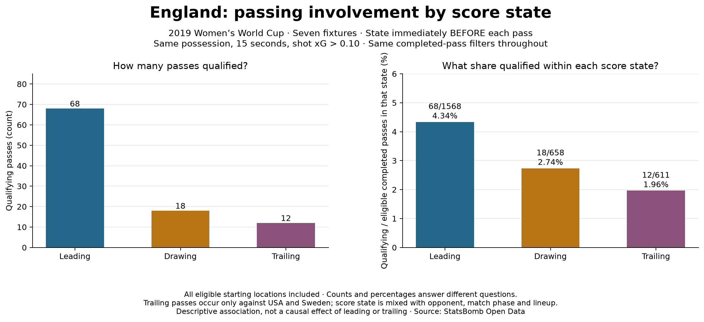

Football analyst training · Project lesson 22
What was the score when the pass happened?
Now we examine England's whole team across all pitch areas. This changes the scope from the previous attacking-third player comparison. The pass and shot selection rules stay the same.
1. Give every pass a score label
- England 1–0 opponent: Leading.
- England 1–1 opponent: Drawing.
- England 0–1 opponent: Trailing.
Use the score immediately before the pass. Imagine a pass at 0–0, followed by an England goal. That pass belongs to Drawing, because England had not scored yet. The final match result does not determine this label.
2. Count passes within each state
England completed 1,568 eligible passes while leading. Of those, 68 were within 15 seconds before a same-possession shot with xG > 0.10.
68 / 1568 * 100 = 4.34%Apply the same calculation while drawing (18/658 = 2.74%) and trailing (12/611 = 1.96%). Failed passes are excluded from these denominators, so these are not completion percentages.

3. Read the football meaning carefully
We cannot say leading caused better passing. England only trailed against USA and Sweden here. Opponent and score state occur together, alongside different game phases and lineups. This mixture of possible explanations is called confounding.
4. Follow the Python logic
Open 22_score_state_context.py in Spyder.
annotate_matchstarts the score at 0–0 and reads events in index order.- At a pass, it saves the current score and its Leading/Drawing/Trailing label.
- At a goal event, it updates the score for later passes.
summarizecounts qualifying and eligible passes separately within each label, then divides.- The reconstructed final score must match the provider match record. A mismatch stops the analysis.
This protects against using information that happened after the pass. Event index also orders actions recorded in the same nominal second. Halftime keeps the score; penalty shootouts are excluded.
5. Practical analyst task
Write two sentences for a coach: one stating the observed difference, and one naming an alternative explanation. Include the denominator and avoid saying that the score caused the result.
Check your explanation
A supported statement is: “England's qualifying share among eligible completed passes was 4.34% while leading and 1.96% while trailing. Trailing observations came only against USA and Sweden, so opponent and other match context could explain the difference.” It does not claim a causal effect or overall player quality.
Ask your teacher to review your wording or explain any code line. The lesson and implementation were prepared with assistance; independent practice remains your next step.
Previous: match-sample uncertainty · Score-state reference · Full report